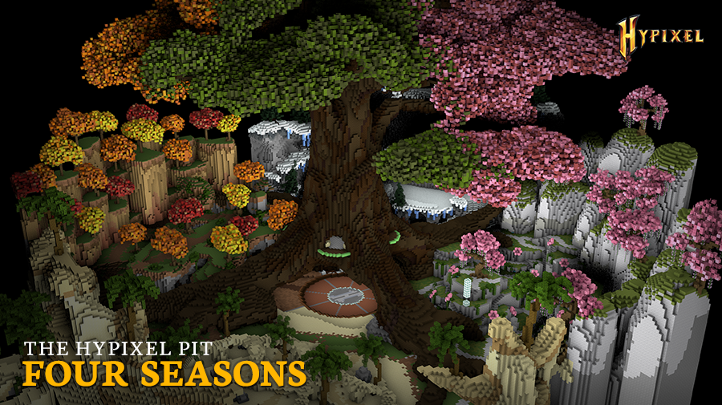

|
The Pit 0.3.5 - Second Map and Mystic Well!
|
|  |
| A screenshot of the new Four Seasons map. |
| Release Date | July 5th, 2018 |
| Forums Approval | 95.1% |
| Forums Author | Minikloon |
| ← The Pit 0.3.1 —
Fishing Club Patch
→
|
The Pit 0.3.5 was the fourth major version of the Hypixel Pit. It introduced the Mystic Well and enchanting to the game, a second map, the Robbery event, and other minor changes.
Enchanting mystic items, the Mysticism renown upgrade, and the Mystic Well were introduced in this version.
The major event Robbery was introduced. When the event was created, it was quoted to give the following rewards:
Perk changes:
- (↑) Increased the absorption from golden apples: (2♥︎ → 3♥︎). New maximum of (3♥︎ → 5♥︎) of absorption from golden apples.
- (↑) Changed the Recon perk to reward (4 XP → 40 XP) and deal (+25% → +50% damage), every (second → fourth) shot.
- (↑) Doubled the damage from the lava in the Lava Bucket perk.
- (↑) Decreased the health loss from Rambo from (−5♥︎ → −2♥︎).
- (↑) Increased the damage of Barbarian's axes by 0.125♥︎, making axes deal 0.5♥︎ more base damage than their sword counterparts.
- (~) Vampire's triple (1.5♥︎) heal now only works on fully-charged arrow shots. Perk buffed to grant Regeneration II (0:05) on kills.
- (~) Decreased Strength-Chaining's maximum damage boost to (+50% → +40%), but changed the damage increase per kill (+5% → +8%).
- (↓) Decreased the absorption from Golden Heads: (3♥︎ → 2♥︎).
- (↓) Decreased the Resistance duration from Dirty: (5 → 4 seconds).
- (↓) Decreased First Strike's hit damage from (+40% → +35%).
Gameplay changes:
- Damage multipliers were changed to be additive instead of multiplicative to prevent "imbalance".
- Increased the time it takes for the Care Package to despawn.
- Disabled block placing around Care Packages.
- Stopped players from placing blocks near the raffle box.
- Increased the King of the Hill platform's radius by 2.
- Players are now launched towards the KOTH platform while the event is active.
- Added two more beasts in the Beast event (total of three).
- Disabled the Rambo perk while being a beast.
- Participation XP now scales based on the player's prestige multiplier.
- Removed arrows from the shop.
- Falling out of the map now instantly kills the player.
- The server name the player is currently in now displays in the sidebar.
- Players' chat messages now display their "exact prestige[s]."
- Players' killstreaks now reset when inside spawn.
- Removed the ability for other players to pick up a player's fished items.
- Increased number of gold ingots by "a lot."
- Fixed being able to place blocks on the glass before Rage Pit began.
- Reduced the sound of the Care Package breaking.